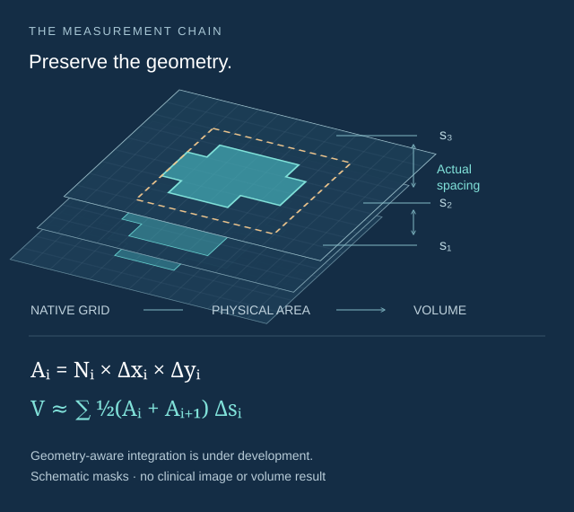
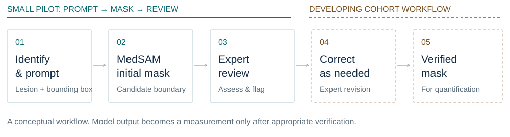
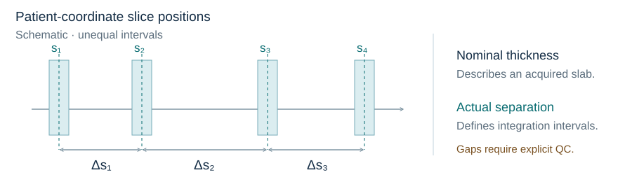

Centre A
The audited series are 1.5 T, predominantly with 4 mm nominal slices. More detailed report fields support the planned clinical association analysis.
Clinical imaging · Human–AI collaboration
Quantitative analysis of femoral-head bone marrow edema on heterogeneous routine MRI
A dual-centre clinical research project combining radiologist collaboration, promptable segmentation and acquisition-aware measurement. The aim is to establish when a lesion measurement is reproducible enough to support clinical interpretation.

01 / Research question
Can foundation-model-assisted segmentation produce reliable, clinically useful BME measurements from the MRI that hospitals already acquire?
Bone marrow edema (BME) has diffuse boundaries. In osteonecrosis of the femoral head, it can also obscure the boundaries of necrotic tissue. The two targets must be distinguished. Routine scans add thick slices, anisotropy, protocol variation and reader subjectivity to the measurement problem. [6]
Quantitative BME analysis has a long history. This project brings together clinical data curation, radiologist interaction, segmentation assistance and a developing reliability framework, with continuous lesion burden as the eventual measurement of interest. [1] [2]
The audited series are 1.5 T, predominantly with 4 mm nominal slices. More detailed report fields support the planned clinical association analysis.
The audited series are 3 T, mostly with 3–4 mm nominal slices, with thicker outliers. This source also supplied the initial segmentation pilot.
The scientific contrast is robustness across clinical acquisition conditions. Centre, scanner, protocol and patient-population effects are confounded. The final eligible cohort is being reconciled, so no overall patient count is reported here.
02 / Project evolution
Exact naming rules missed fluid-sensitive series when protocol descriptions varied or sequence-name fields were empty. I developed broader candidate classes that combine available descriptors with DICOM-derived orientation, followed by explicit review flags.
Research consequence: establish what was acquired before deciding what to measure.
Early exports conflated report-referenced frames with sorted slice position. The export logic was revised to preserve a traceable link to the source DICOM and to keep report-frame selection separate from physical ordering.
Current local exporters match reported frames to InstanceNumber. Agreement with the clinical viewer still needs case-level confirmation; that metadata field is not a universal viewer-page guarantee.
Research consequence: clinical references and image provenance must stay aligned.
The small MedSAM pilot produced masks that could be scored and inspected, while qualitative feedback identified incomplete or excessive boundaries, particularly near joint effusion. This made expert verification and correction central to the developing workflow.
Research consequence: evaluate the measurement and the work needed to trust it.
03 / Human–AI workflow
Radiologists define the target. The model supplies an initial contour. Verification determines what can become a measurement.
MedSAM translates a bounding-box prompt into a candidate mask. It is a replaceable component of the research workflow; lesion identity, boundaries and correction decisions remain clinical responsibilities. [3]

Recorded pilot evidence
64
Across 19 case records in Centre B. Of 69 selected image rows, 64 had annotated prompts and produced saved masks; five were skipped without a box.
19 of 64 received the highest recorded score. The pilot established a reviewable technical workflow and a clear need for further expert input.
Radiologist annotation tool
I developed a Windows-compatible desktop tool and portable export packages for collaborating radiologists. The tool keeps the selected image, side and report-frame context with each annotation.
Doctors are currently annotating the bulk of the cohort. These are exported-image annotation tools; the full-cohort connection to reviewed segmentation and measurement is still being developed.
04 / Physical-space quantification
A mask’s pixel count becomes an area through pixel spacing. A stack of areas becomes a volume through the geometry of the acquisition.
The pipeline already extracts DICOM geometry and estimates inter-slice distances. The developing volumetry method uses PixelSpacing, ImagePositionPatient and ImageOrientationPatient to retain that physical context through to the final estimate.

For consistently oriented parallel slices, neighbouring cross-sectional areas can be integrated over their actual separation. This avoids blindly multiplying by nominal SliceThickness. It still requires verified lesion coverage, a defined endpoint policy and explicit handling of gaps and partial-volume effects.
Technical components have undergone small-scale testing. Full-cohort physical volumes and measurement validation are not yet reported. Geometry handling cannot recover unobserved anatomy from thick slices.
Geometry extraction; projected spacing summaries; variable-spacing warnings; nominal thickness/spacing checks; metadata-completeness warnings; slice-order diagnostics.
Explicit duplicate/missing-position checks, all-slice orientation consistency, complete lesion coverage and rejection rules need to be consolidated and validated.
05 / Reliability framework
Agreement in the derived measurement is the central endpoint. The design separates reader variability, acquisition effects and external robustness, and will report uncertainty alongside point estimates. [7] [8]
| Dimension | Question and evaluation | Status |
|---|---|---|
| Inter-reader reference | Two independent senior-radiologist reads on a predefined subset. Dice and normalised surface Dice for masks; ICC and Bland–Altman for volume; kappa for grade. Preserve independent readings before consensus. | Planned analysis |
| Coronal–axial agreement | Quantify matched lesions independently in each plane. Assess physical correspondence, then compare volumes with ICC, Bland–Altman and absolute/percentage differences. | Planned analysis |
| External-centre robustness | Develop and internally assess the measurement protocol in the more standardised dataset, then evaluate a frozen workflow on unused heterogeneous-centre cases. | Design only |
| Expert effort | Evaluate whether MedSAM2 propagation reduces total prompting, review and correction time while preserving measurement agreement. [4] | Planned evaluation |
Multicentre reliability has not started. Because Centre B contributed the existing pilot, it cannot be described as an untouched external centre. The final held-out split must exclude development cases and disclose prior protocol exposure.
Coronal and axial routine MRI sample anatomy differently. Anisotropic slices, obliquity, motion and partial-volume effects can change the measured boundary. Physical-coordinate correspondence, and rigid registration where justified, support comparison; they do not make these acquisitions equivalent high-resolution observations.
Where label transfer is needed, nearest-neighbour resampling will preserve label values. Volume estimates should remain on the native acquisition grids. The planned analysis will specify agreement tolerances and account for repeated observations within a patient.
06 / Clinical interpretation
The clinical comparator is an existing BME extension grade.
Within the femoral head.
Beyond the head, within the femoral neck.
Beyond the femoral neck.
These categories describe anatomical extent. A continuous volume could capture additional variation within the same grade. The study will test whether it adds interpretable information about concurrent femoral-head collapse or deformity. [6]
Existing categorical BME extension grade
Extension grade + continuous BME volume
The planned comparison uses the same eligible sample and appropriate covariate handling. Secondary report-derived features may include articular-surface changes, joint-space narrowing, cartilage abnormalities and effusion. Report normalisation and laterality/frame parsing already exist; validated structural-finding extraction remains downstream work.
“Not mentioned” will remain distinct from “explicitly absent” and “uncertain.” This is a cross-sectional question about incremental information, without a claim that BME volume causes collapse or predicts future outcomes.
07 / My contributions
I implemented DICOM metadata extraction, case-table assembly, sequence classification and target-series export, and investigated the mismatch between clinical frame references and spatial slice ordering.
I developed the annotation interface, structured exports, progress/resume behaviour and practical installation guidance, turning lesion identification into traceable prompts for segmentation.
I integrated MedSAM inference with prompt validation, saved masks and overlays, and review summaries. Clinical feedback helped identify where expert correction belongs in the workflow.
I am developing the acquisition-aware quantification and QC workflow, and shaping the planned reproducibility and clinical comparisons around the limitations of routine MRI.
The project leads naturally toward medical foundation models that use spatial context with fewer expert prompts, and multimodal systems that connect images, acquisition metadata and structured clinical findings. The next step is to evaluate how those models affect measurement fidelity, uncertainty and expert workload.
This emphasis is closely related to Hoyer and colleagues’ segmentation → biomarker → clinical-utility framework. Their study evaluates different musculoskeletal targets and downstream prediction tasks; our BME measurement and reliability work is at an earlier stage. [5]
08 / Current status
The current bottleneck is the bulk radiologist bbox annotation.
Small-scale technical tests have been performed. The next stage is to carry completed cohort annotations through reviewed segmentation and quantitative analysis; formal reliability results are not yet available.
Status reviewed September 2026. “Completed” describes the stated component or pilot, not full-cohort clinical validation.
09 / Limitations
10 / Selected references